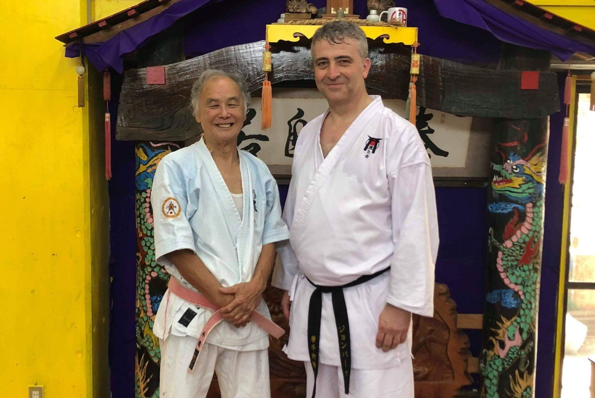
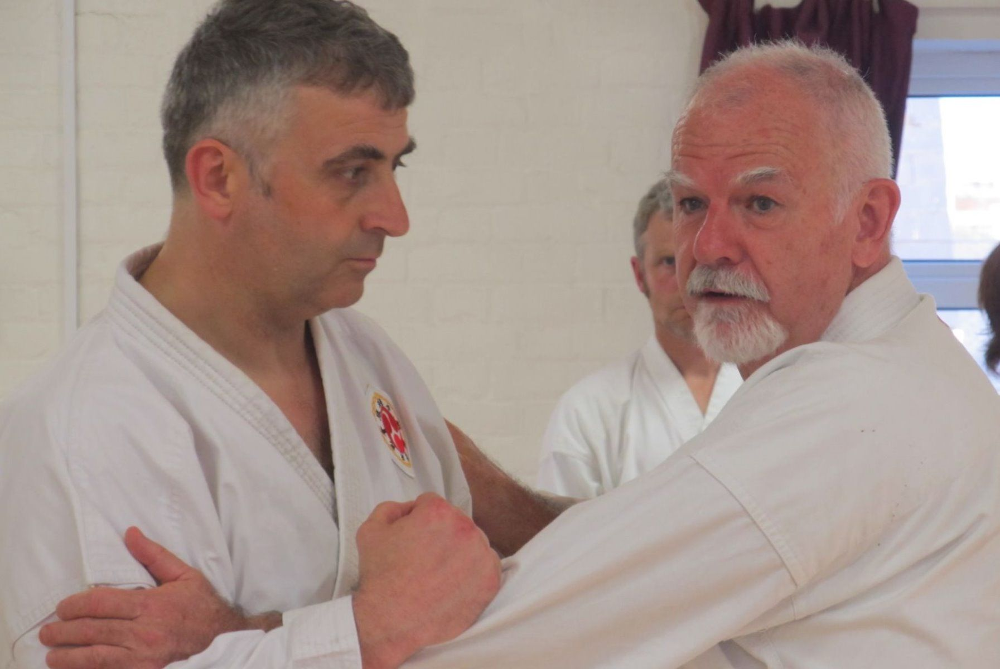

Karate for everyone — fitness, confidence, and discipline in a traditional atmosphere
A family-run Shotokan karate club training in Newton Abbot and Torquay, Devon. Classes run 7 days a week for ages 5 to adult, taught by DBS-checked instructors, with no contracts.

A traditional dojo with a genuine international pedigree
Genuine Okinawan lineage
Chief instructor John Burke renshi has trained repeatedly in Japan and Okinawa — the home of karate — and hosts guest instructors including Hanshi Patrick McCarthy, 9th Dan.
DBS-checked & insured
Instructors hold an Enhanced DBS check and are insured for member-to-member training, public liability, and professional indemnity. All are Black Belts with a minimum of 500 hours' training.
Classes for every age
Little Warriors (4–7), Juniors, and Adults classes, plus a dedicated Black Belts club — with free trial lessons and no contracts.
Two Devon locations
Head office and matted training centre in Newton Abbot, with classes every day, plus an additional Tuesday evening class in Torquay.

John Burke renshi — 7th Dan, teaching since 1996
John Burke renshi has taught children and adults for almost three decades, with a particular focus on bunkai and oyo — the practical, self-defence applications hidden within traditional kata, rather than sport-only forms. He has written articles for Traditional Karate magazine and trained repeatedly in Japan and Okinawa.
Our instructors and members are licensed by the Eikoku Karate-do Keikokai and recognised by the Traditional Karate Study Group International, with Black Belt gradings authorised by Anthony Blades hanshi.
Unsolicited words from visiting instructors and students
“I really enjoyed my visit to The Karate Academy. You have a great set-up and your students are a credit to you. Thank you, and my thanks to them for making me so welcome!”
Terry O'Neill, 7th Dan sensei, Merseyside — after teaching a seminar for the club
“Coming from an association that doesn't concentrate on Bunkai… you'll learn things that will make everything relevant, you'll train under some of the best keiko karate-ka. All I can say is try it, you won't be disappointed!”
Andy, visiting from another karate club
“Your book, Fortress Storming, is one of my top 5 books ever.”
Dave Cook sensei, shodan, Cornwall